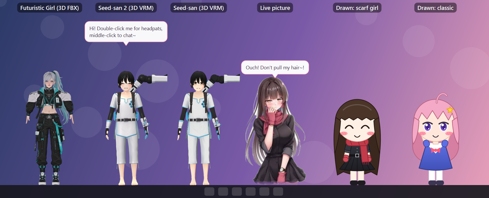
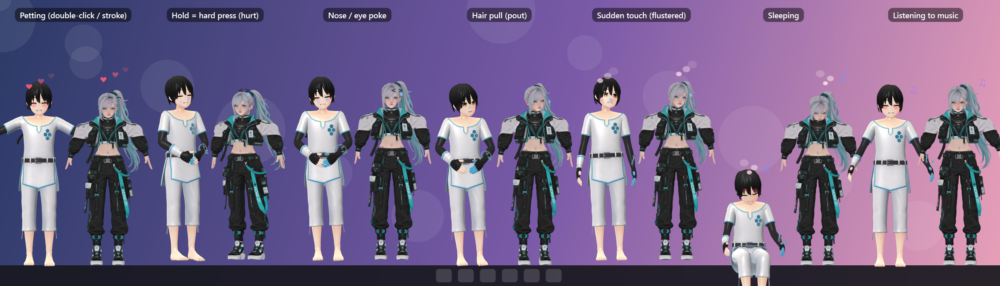
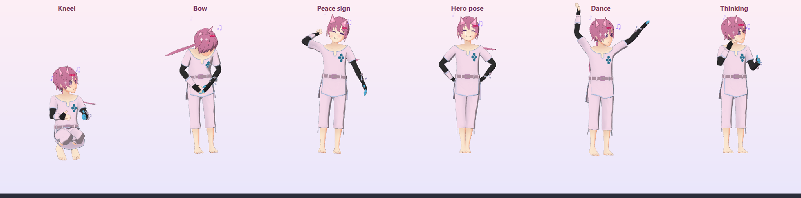
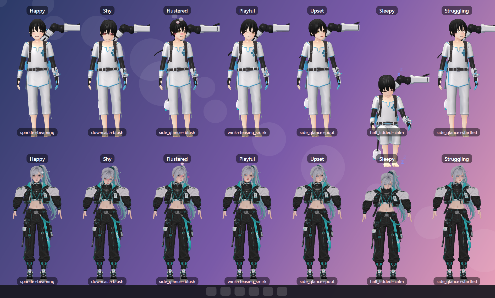
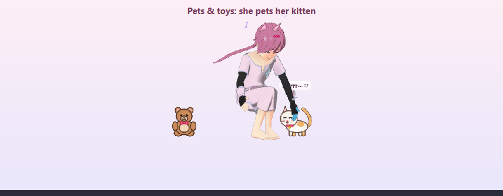
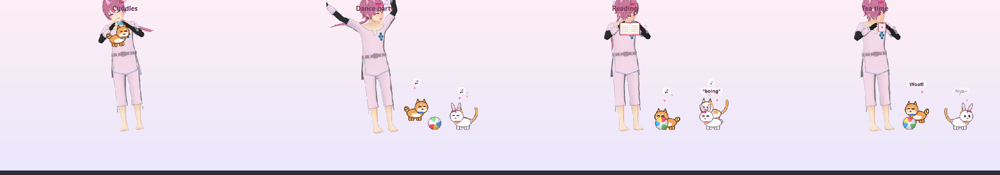
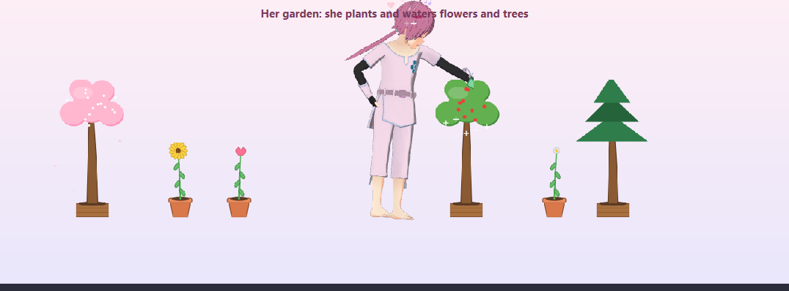

A cute 3D girl who walks and sits on your taskbar, reacts to every touch, chats with you (Gemini or a fully offline AI), dances to your music, hums the songs you play, plants a little garden, plays with her pets and looks after you while you work.
Free & open source · Windows 10 / 11 · all releases

Not just a picture on your screen: she has a body, feelings, memories and a life of her own.
Head pats, cheek squishes, hand holding, hair you can pull. Hit her and she gets angry.
Shy, flustered, playful, sleepy, pouting, struggling. Her face follows her mood.
Gemini or a downloaded local model. Cute anime voice, voice input, and she remembers you.
"Sit down", "bow", "dance", "lie down", "peace sign"… type it or say it.
A kitten, a puppy and a bunny, plus a ball, teddy and yarn. Throw, pet and play fetch.
She plants flowers and trees on your taskbar, waters them, and they bloom.
She dances on the beat in the song's mood, then hums the tune later.
Reminders, breaks, water, eye rest, and tea time while you code.
One switch and she won't look at or listen to anything on your PC.



Every so often she decides to do something: pet her kitten, cuddle the puppy, throw the ball for fetch, give treats, read a book, have tea, exercise, or throw a dance party with her pets.



All of this is worked out on your PC. The audio never leaves it.
Bouncy fist pumps for energetic songs, side steps for happy ones, a slow sway for calm music, air guitar for intense tracks.
Tempo, energy and major / minor key tell her how a song feels. A sad song makes her quiet and teary.
She picks up the melody you played and hums it later, with a human voice, when it's stuck in her head.
Pick a voice: cute, genki, little sister, soft Japanese. She sings little original songs to herself.
Your health matters to her.
"Remind me at 5:30 pm to call mom", "in 20 minutes", "every day at 8am". She comes over and tells you.
After a long stretch of work she suggests a break, stretches with you and reminds you to drink water.
Gentle eye-rest reminders, and a sleepy nudge when it's way past bedtime.
Turn it on and she shades her eyes, squints at your work, offers to help, and invites you for tea.
Right-click → Privacy. One switch, and she won't look at or listen to anything on your PC.
%APPDATA%\DesktopWaifu.Windows 10 or 11 with a graphics card that supports OpenGL 3.3 (almost any PC from the last 10 years).
Get DesktopWaifu-Setup.exe and run it. No admin rights needed.
She appears on your taskbar. Right-click her for the menu, middle-click to chat.
Paste a free Gemini API key in Settings, or download a local model to talk offline.
The installer isn't code-signed (that costs money each year), so SmartScreen warns about it. Click More info → Run anyway. The full source code is on GitHub if you'd like to check it or build it yourself.
For Gemini chat and her online voice, yes. With a local model (Ollama) she can chat offline, and she falls back to the Windows voice. Her touches, poses, pets, garden and music dancing all work offline.
Yes. Any VRM model works: drop the .vrm file into the assets/models folder and pick it from
Right-click → Character.
Settings → Apps → DesktopWaifu → Uninstall. Your settings stay in %APPDATA%\DesktopWaifu if you want to
come back; delete that folder to remove everything.
Install Python 3.12+, clone the repo, run setup.bat then run.bat. See the
README.